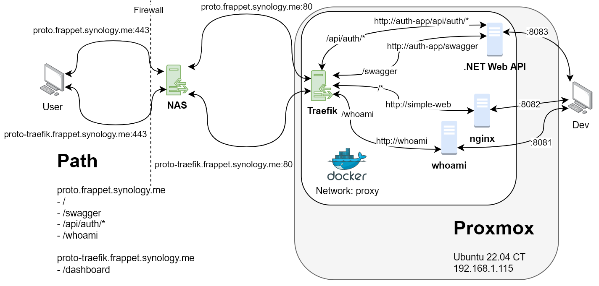

ตัวอย่างการคอนฟิก Microservice เพื่อเป็นต้นแบบในการพัฒนา จะเพิ่มฟีเจอร์เรื่อยๆ ใช้ Traefik เป็น API Gateway และ Load balance อย่างง่ายได้ รวมพอร์ตและ path จากหลายเซิร์ฟเวอร์ให้เป็น pathใน domain เดียว User จะไม่รู้เลยว่า ในโดเมนเดียวกัน มีหลายเซิร์ฟเวอร์ให้บริการเบื้องหลังหลายตัว(Container) จะมีการเพิ่ม CI/CD และบริการอื่นเข้าไปในภายหลัง
ถ้านักพัฒนาเข้าใจการทำงานจะสามารถ จำลองสภาพแวดล้อมเครื่องตัวเองได้โครงสร้างคล้ายกับ Production สามารถเลือก Route บริการต่าง ไปที่เครื่องของ Dev Test Product เพื่อทดสอบแบบต่างๆได้โดย แก้ปัญหา CORS ด้วย ให้เข้าเครื่อง Proxmox Lab เพื่อดูรายละเอียดคอนฟิกต่างๆ ทุกเซิร์ฟเวอร์เป็น Docker Container สำหรับ .NET ให้อ่านวิธีการ build docker image ใน Readme.md Dockerfile docker-compose.yml
ในคอนฟิกของ docker มีการเปิดพอร์ตบนเครื่อง host แต่ไม่ได้ใช้งาน จะใช้การอ้างชื่อ service ที่ประกาศใน docker-compose.yml แทน ip:port การทำงานทำภายในเน็ตเวิร์ก proxy มี entry ที่พอร์ต 80. นักพัฒนาสามารถติดต่อตรงไปที่ ip:port ที่เปิดไว้ได้ถ้าไม่ได้ใช้ก็ปิดได้
เอาไว้ดูว่าการ Route ในแต่ละ service เป็นยังไง
คอนฟิก Route ใน dynamic.yml เป็น root ของเวปสามารถเข้า sub folder ได้เลย
คอนฟิก Route จาก Label ใน docker-compose.yml
คอนฟิก Route ใน dynamic.yml /api/auth/* ต้องใช้ Regex เพื่อให้ใช้ Sub Folder ได้ swagger ไม่มี sub folder เลยไม่ต้องใช้
จะมีระบบเพิ่มเติมที่อาจจะมารวมในแผนภาพนี้ พร้อมตัวอย่าง web app เช่น minio , frappet-meet, harbor, mysql, mongodb, keycloak, ELK, Grafana ฯลฯ